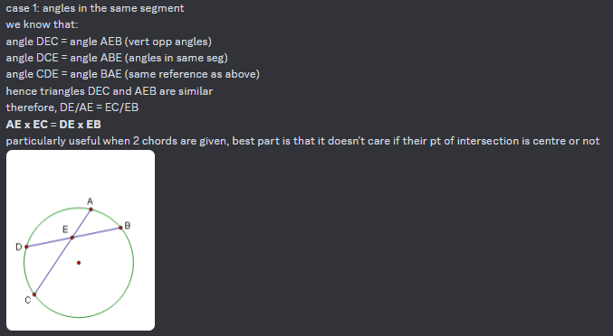
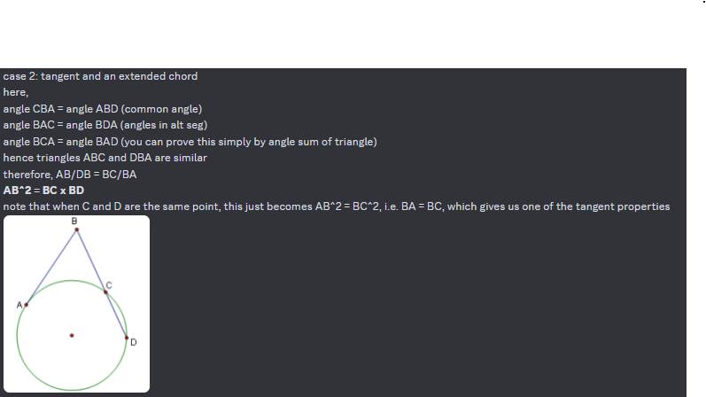
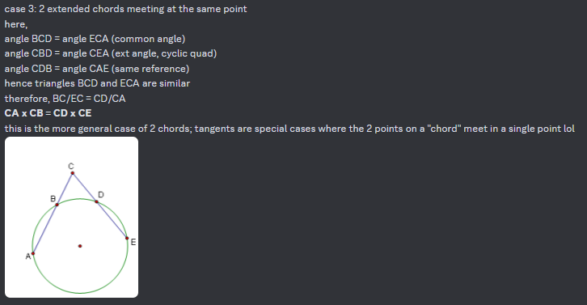

Yes, Timmy, points can have a value.
The power of a point (Π(P)), (not to be confused with PowerPoint, the software with which millions have demonstrated blatant idiocy regarding their editing skills, and laziness, especially if generated by AI), refers to the "relative distance of a point from a circle".
This is Wikipedia's way of saying it. However, I hate it so much, so I'll make a better one.
The power of a point is defined as (distance to centre)^2 - (radius)^2. There, much better.
In other words, go construct a right-angled triangle (with a tangent if needed), you lazy ass, go figure that yourself. Anyhow, with our definition this produces different results:
1. The point is on the circumference. In this case, Π(P) = 0. (duh)
2. The point is outside the circle (aka not INSIDE the circle). In this case, Π(P) is larger than 0.
3. The point is inside the circle. In this case, Π(P) is smaller than 0.
If anyone's studied theorems inside circles, then you know how much of a pain it is to remember all those angle theorems. Well, it's about to get a lot worse.
Since I'm too lazy, I'll just show 3 of these theorems which can help derive properties of power:
  